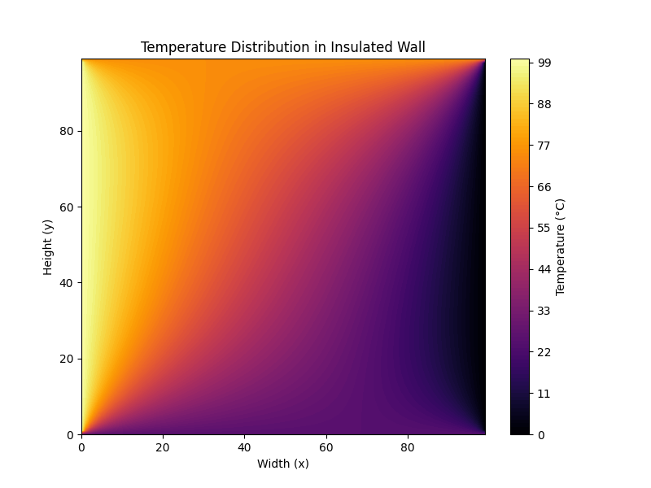
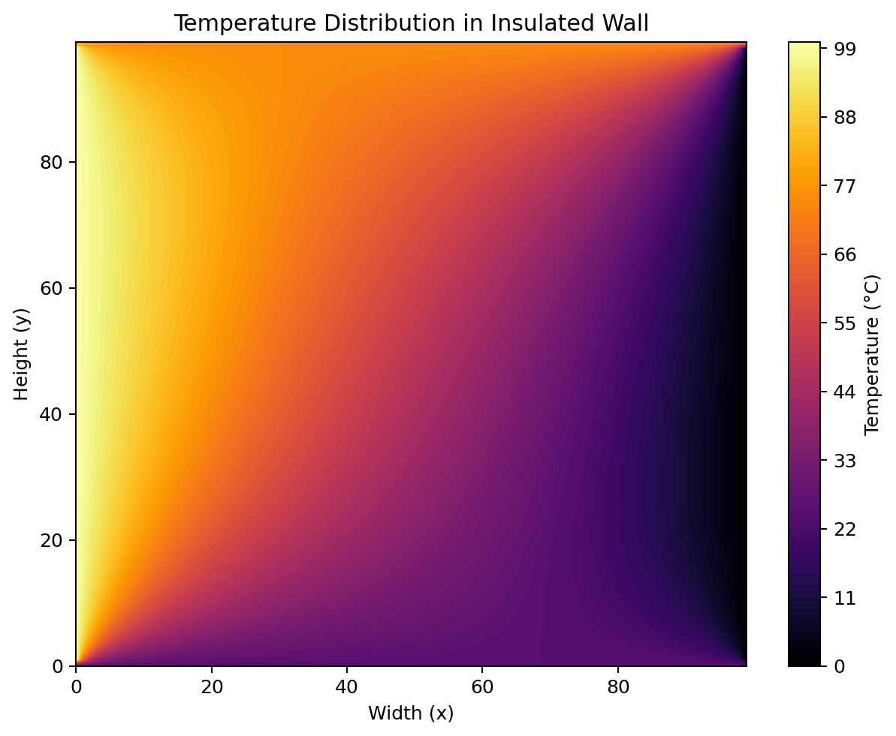
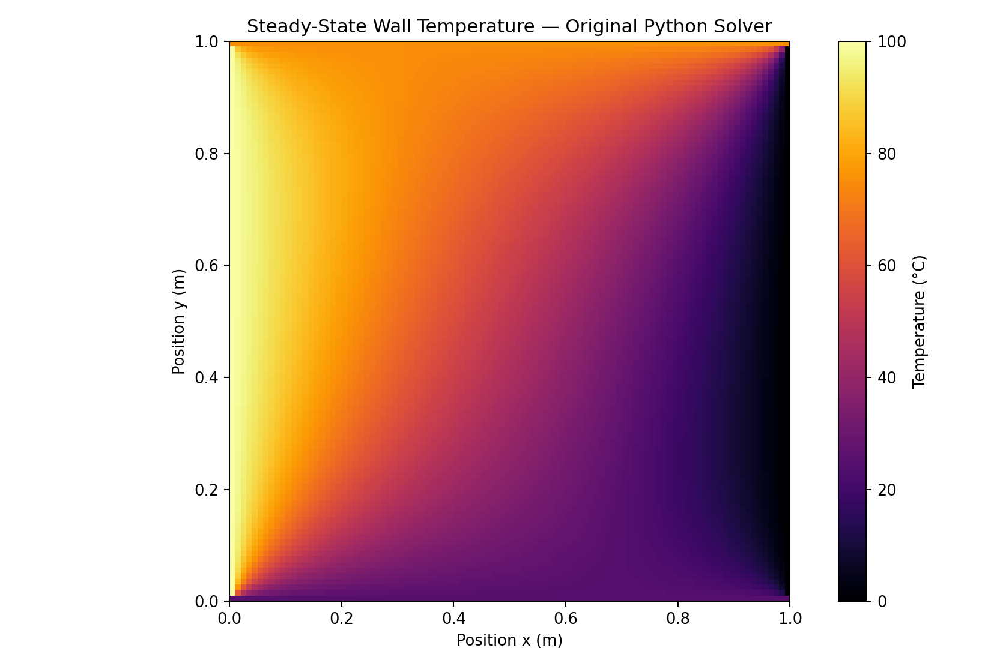
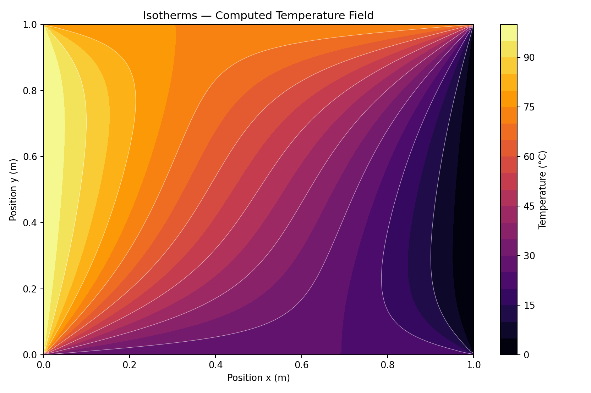
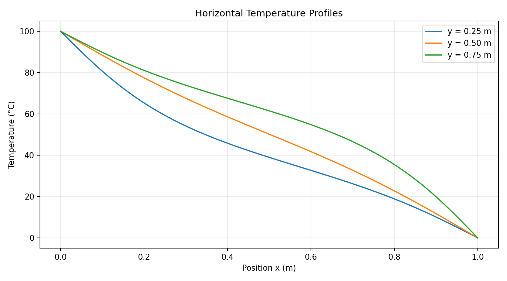

Project introduction
Heat transfers through wall insulation whenever interior and exterior surface temperatures differ. This study models a homogeneous 1 m × 1 m wall cross-section under specified temperatures on all four edges. The objective is to calculate the temperature at each interior grid node, visualize the resulting two-dimensional field, and understand the effect of the different boundary temperatures on the thermal gradients.
Unlike a one-dimensional wall approximation, a two-dimensional model captures the influence of the warmer top and cooler bottom boundaries. The report formulates the steady-state conduction problem with the Laplace equation and solves its finite-difference representation iteratively.
Governing equation and numerical methodology
For constant thermal conductivity and no internal heat generation, the two-dimensional steady-state equation is ∂²T/∂x² + ∂²T/∂y² = 0. The five-point stencil approximates each interior node as the mean of its four adjacent temperatures. Successive over-relaxation uses a relaxation factor of 1.8, terminating when the maximum nodal update falls below 10⁻⁶ °C.
| Quantity | Value | Interpretation |
|---|---|---|
| Domain | 1 m × 1 m | 2D homogeneous wall cross-section |
| Grid | 100 × 100 | Uniform spacing ≈ 0.010101 m |
| Left edge | 100°C | Hot boundary |
| Right edge | 0°C | Cold boundary |
| Bottom edge | 25°C | Cooler horizontal boundary |
| Top edge | 75°C | Warmer horizontal boundary |
| SOR relaxation factor | 1.8 | Over-relaxed Gauss–Seidel update |
| Convergence threshold | 10⁻⁶ °C | Maximum iteration-to-iteration difference |
| Maximum allowed iterations | 10,000 | Upper loop limit |
Temperature fields, contours and profiles
The first figure comes directly from the original report. The remaining four images were generated by executing the supplied Numerical.py and visualizing its resulting numerical temperature array. Each figure is presented separately for inspection.

The source report shows a continuous temperature field across the square wall. The highest temperatures cluster near the hot left boundary and the upper region, while the cold right boundary produces darker contours. This is the submitted figure, not a recreated simulation.
Open full-resolution image ↗
The supplied Numerical.py was executed without altering its solver. The output reproduces the qualitative diagonal-gradient pattern. Its axes are grid indices rather than physical metres, as in the original plotting commands.
Open full-resolution image ↗
The computed field is re-plotted on a 1 m × 1 m domain using the same numerical temperatures. The image makes the spatial gradient clear without changing the governing equation or boundary temperatures.
Open full-resolution image ↗
Curved constant-temperature contours confirm that temperatures depend on both x and y, not just on a one-dimensional conduction path. The visible corner transitions reflect the boundary assignment order.
Open full-resolution image ↗
Three horizontal slices show that the left-to-right cooling rate varies with height: the upper slice is hotter because the top boundary is fixed at 75°C, while the bottom is fixed at 25°C.
Open full-resolution image ↗Numerical output and interpretation
| Measured/computed item | Value | Comment |
|---|---|---|
| Convergence | 1,464 iterations | The original tolerance was satisfied during the executed run. |
| Maximum last iteration change | 9.9916 × 10⁻⁷ °C | Below the 10⁻⁶ °C stopping criterion. |
| Center-region node T[50,50] | 49.7892°C | Consistent with the competing boundary temperatures. |
| Minimum / maximum grid temperatures | 0 / 100°C | Set by the right and left boundary values. |
| Mean of all grid nodes | 49.99996°C | Spatial grid average for this numerical solution, not a heat-flux metric. |
| Bottom corners | 25°C, 25°C | Bottom boundary assignment overwrites left/right corner values. |
| Top corners | 75°C, 75°C | Top boundary assignment overwrites left/right corner values. |
Technical discussion
The output demonstrates two-dimensional gradients and curved isotherms. Temperature generally decreases from the left edge to the right edge; at a fixed x-position the upper region is warmer than the lower region because of the imposed top and bottom temperatures. SOR converged numerically for this grid and tolerance, but the run does not establish mesh independence or experimental agreement.
Original project source: Numerical Project.pdf, pp. 2–6; execution values generated directly from the supplied Numerical.py.
Original report, Python code and numerical dataset
The uploaded PDF and Python script are preserved as submitted. No software GUI or recorded experiment was included in the source files.